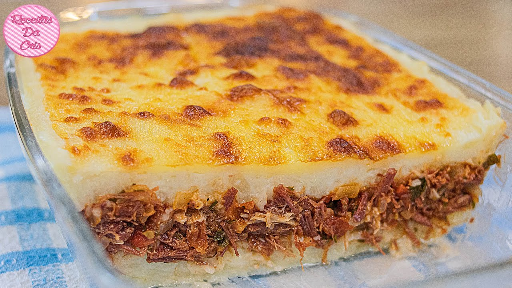

Home
Shredded Dried Beef Casserole

Description
A comforting dish with layers of seasoned dried beef, creamy mashed potatoes, and melted cheese. It’s warm, savory, and absolutely delicious. Here in Brazil we call this dish "Escondidinho de Charque"
Ingredients
- 500g of dried beef (charque), desalted and shredded
- 1 onion, chopped
- 2 cloves of garlic, minced
- 2 tablespoons of olive oil
- 300g of mashed potatoes or cassava
- 200g of grated mozzarella cheese
- Salt and pepper to taste
- Fresh parsley for garnish (optional)
Steps
- Cook and shred the dried beef after desalting it.
- Heat the olive oil in a pan and sauté the onion and garlic until golden brown.
- Add the shredded beef and cook for a few minutes, seasoning with salt and pepper.
- In a baking dish, spread half of the mashed potatoes or cassava as the bottom layer.
- Add the shredded beef mixture on top.
- Cover with the remaining mashed potatoes or cassava and top with grated mozzarella cheese.
- Bake in a preheated oven at 200°C (392°F) until the cheese is golden and bubbly.
- Garnish with fresh parsley and serve hot.